What are you cooking?
Bulgogi Chicken Stir-Fry with Noodles and Sugar Snap Peas
- 1Bell Pepper
- 1Lime
- 210 gDiced British Chicken Thigh
- 125 gEgg Noodle Nest
- 80 gSugar Snap Peas
- 100 gBulgogi Sauce
- 25 milliliter(s)Soy Sauce
Step 1 of 4
Get Prepped
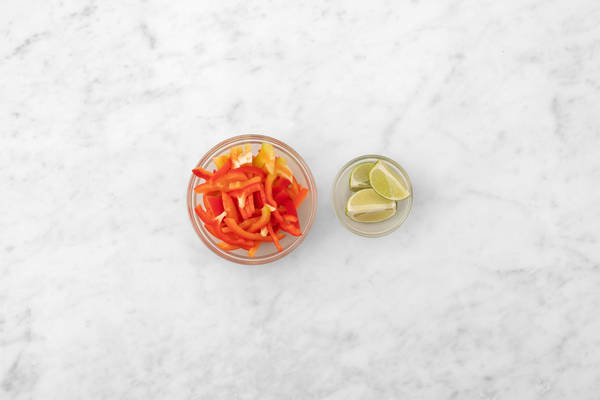
Boil a full kettle. Pour it into a saucepan with 1/4 tsp salt on high heat. Slice the pepper into strips. Cut the lime into wedges.
Step 2 of 4
Fry Time
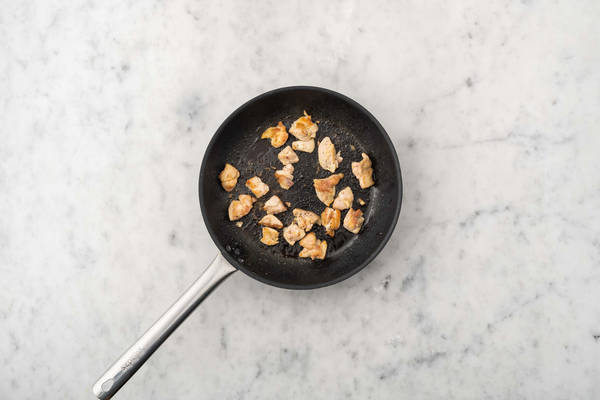
Heat a drizzle of oil in a frying pan on medium-high heat. Once hot, fry the chicken, 8-10 mins. Season with salt and pepper. IMPORTANT: Wash hands and utensils after handling raw meat. Cook so there's no pink in the middle. Meanwhile, boil the noodles, 3-4 mins. Once cooked, drain and run under cold water.
Step 3 of 4
Add the Veg
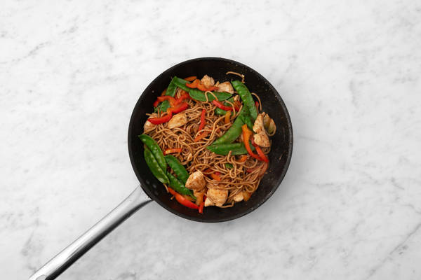
Next, add the pepper and sugar snap peas to the pan and fry, 3-4 mins. Stir in the bulgogi and soy and fry, 1-2 mins. Add the cooked noodles to the pan. Toss to coat and warm through, 1-2 mins. Add a splash of water if it's dry.
Step 4 of 4
Dinner's Ready!
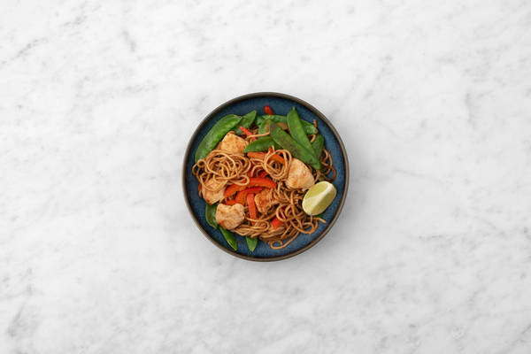
Share the chicken noodles between your bowls. Serve with a lime wedge on the side for squeezing over. Enjoy!
Cheesy Mexican Style Beef Hash with Crispy Potato Top and Guacamole
- 450Potatoes
- 1Bell Pepper
- 2Garlic Clove
- 240British Beef Mince
- 1Mexican Style Spice Mix
- 1Finely Chopped Tomatoes
- 10Beef Stock Paste
- 1Avocado
- 1Lime
- 30Mature Cheddar Cheese
- 50Water for the Beef cupboard
Step 1 of 6
Roast the Potatoes
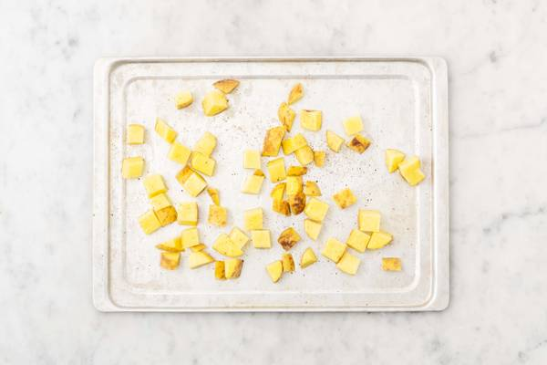
Preheat your oven to 200°C. Chop the potatoes into 2cm chunks (no need to peel). Pop them on a large baking tray. Drizzle with oil, then season with salt and pepper. Toss to coat, then spread out in a single layer. TIP: Use two baking trays if necessary. Roast on the top shelf of your oven until golden, 25-30 mins. Turn halfway through.
Step 2 of 6
Get Prepped
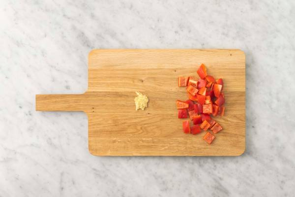
Meanwhile, halve the pepper, discard the core and seeds then chop into 2cm chunks. Peel and grate the garlic (or use a garlic press).
Step 3 of 6
Brown the Beef
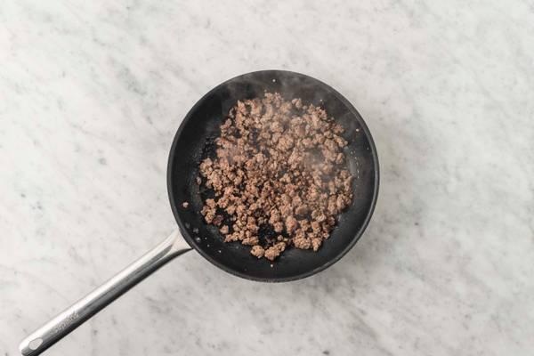
Heat a drizzle of oil in a large frying pan on medium-high heat. When hot, add the beef mince and cook until browned, 4-5 mins, breaking it up with a spoon as it cooks. IMPORTANT: Wash your hands and equipment after handling raw mince. The mince is cooked when no longer pink in the middle. Once browned, drain and discard any excess fat. Add the pepper to the beef, stir together, and cook until softened, 5-7 mins, stirring occasionally. Season with salt and pepper.
Step 4 of 6
Simmer
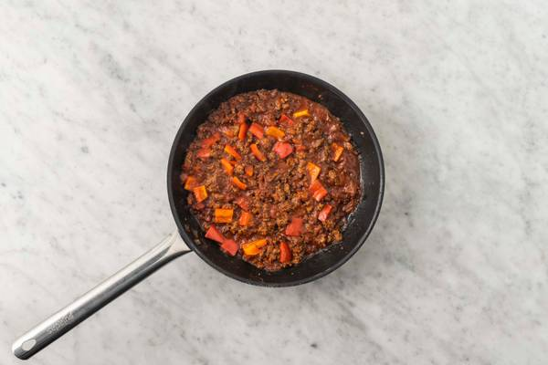
Stir the Mexican style spice mix and garlic into the beef and cook for 1 min. Pour in the chopped tomatoes and water (see ingredients for amount). Stir in the beef stock paste, bring to the boil then reduce the heat to medium. Allow to simmer and thicken, stirring occasionally until there is almost no liquid left, 12-15 mins. TIP: Add a splash more water if the mixture looks a little dry.
Step 5 of 6
Make the Guacamole
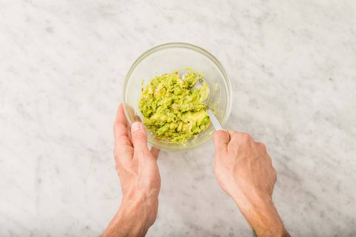
Meanwhile, slice lengthways into the avocado. Once you reach the stone, turn the avocado around to cut it in half. Twist each half and pull it apart. Remove the stone then scoop out the insides into a bowl. Halve the lime and add a squeeze of juice and a pinch of salt and pepper. Mash with a fork. Taste and add more salt, pepper and lime juice if required. Grate the cheese.
Step 6 of 6
Finish and Serve
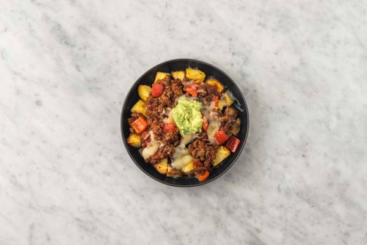
Once the sauce has thickened, season with salt and pepper to taste. Spoon into an ovenproof dish. Top with the roasted potato and sprinkle over the cheese. Place on the top shelf of your oven and bake until the cheese has melted and is nice and golden, 10-12 mins. Once golden, serve in deep bowls with a dollop of guacamole. Enjoy!
Chorizo-Crusted Penne 'n' Cheese with Garlicky Tenderstem Broccoli
- 16Plain Flour
- 200Penne Pasta
- 150Tenderstem® Broccoli
- 1Chicken Stock Powder
- 1Echalion Shallot
- 1Dried Thyme
- 60Chorizo
- 1Garlic Clove
- 60Mature Cheddar Cheese
- 25Panko Breadcrumbs
- 150Creme Fraiche
- 1Olive Oil cupboard
- 200Water for the Sauce cupboard
Step 1 of 6
Get Prepped
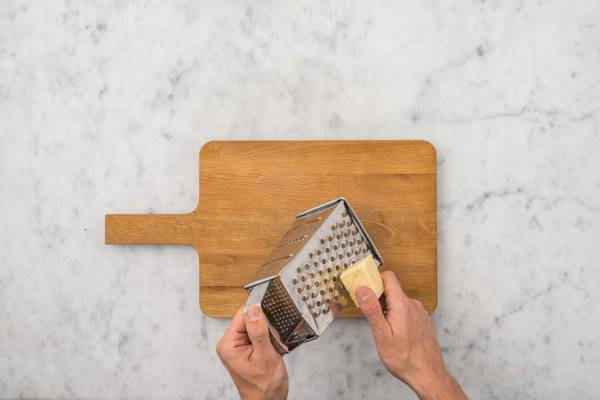
Preheat your oven to 200°C. Bring a large saucepan of water to the boil with 0.5 tsp of salt for the pasta. Halve, peel and thinly slice the shallot. Peel and grate the garlic (or use a garlic press). Grate the cheese. Once boiling, add the wheat penne to the water, simmer until cooked, 12 mins. Drain in a colander, pop back in the pan and stir through a little oil to stop it sticking together.
Step 2 of 6
Make the Crumb
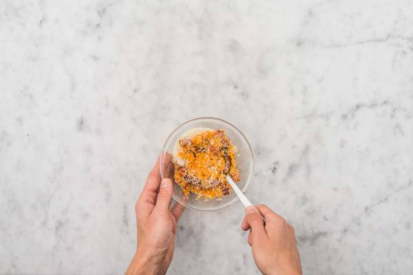
Heat a drizzle of oil in a frying pan on medium-high heat. Once the oil is hot, add the chorizo and stir-fry until it releases its lovely red oil, 1-2 mins. Don't let it take on too much colour! Pour the chorizo and all its oil into a bowl and add the breadcrumbs and the olive oil (see ingredient list for amount). Add a grind of pepper, stir to coat the crumbs in the oil and leave to the side.
Step 3 of 6
Make the Sauce
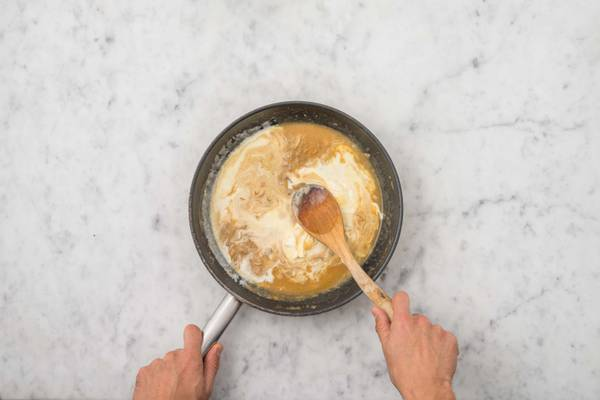
Put your frying pan back on medium-high heat. Add the oil (see ingredients for amount) and the shallot. Stir-fry until the shallot is soft, 3-4 mins then stir in the flour. Cook until it forms a paste consistency, 1-2 mins. Gradually, stir in the water (see ingredient list for amount) and the stock powder. Bring to the boil, stir and simmer until thickened, 1-2 mins. Stir in the creme fraiche, then remove from the heat.
Step 4 of 6
Assemble
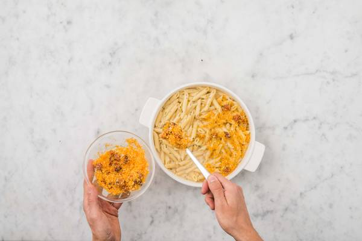
Add the dried thyme and cheddar to the sauce and stir until the cheese is melted. Taste and add salt and pepper if it needs it. Add the pasta to the sauce and stir to combine with a splash of water to loosen if you need to. Pour into an ovenproof dish. Sprinkle the chorizo crumb evenly over the top, then bake on the top shelf of your oven until the crumbs are golden, 5-6 mins. Once cooked, remove from your oven. Meanwhile, wash out your frying pan and pop back on medium high heat.
Step 5 of 6
Cook the Broccoli
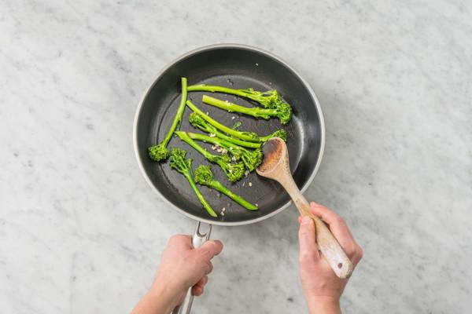
Add a drizzle of oil to your frying pan and once hot, add the Tenderstem broccoli and season with salt and pepper. Stir-fry until starting to char, 1-2 mins. Add the garlic to the pan and stir-fry for a minute longer, then add a splash of water and cover the pan with a lid or kitchen foil. Lower the heat to medium and steam the broccoli until tender, 4-5 mins. Remove the pan from the heat.
Step 6 of 6
Finish and Serve
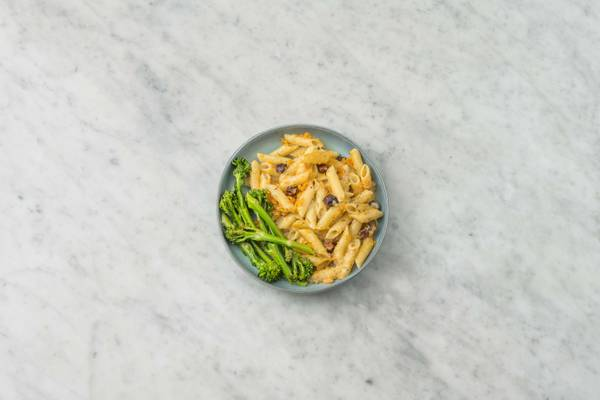
Spoon the penne 'n cheese into bowls and serve the broccoli alongside. Enjoy!
Crispy Chinese Style Duck Tacos and Plum Sauce with Pickled Radish, Spicy Smacked Cucumber and Wedges
- 450 gPotatoes
- 2Confit Duck Legs
- 1 sachet(s)Chinese Five Spice
- 2Plum
- 64 gHoisin Sauce
- 100 gRadishes
- 30 milliliter(s)Rice Vinegar
- 1Baby Cucumber
- 15 gSambal Paste
- 15 milliliter(s)Soy Sauce
- 6Plain Taco Tortillas
- 1 tspSugar for the Sauce cupboard
- 2 tbspWater for the Sauce cupboard
- 1 tspSugar for the Pickle cupboard
Step 1 of 6
Prep the Wedges
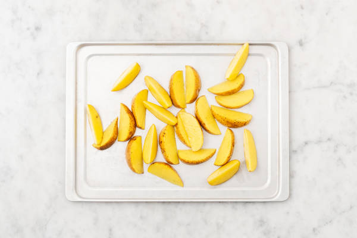
Preheat your oven to 220°C/200°C fan/gas mark 7. Chop the potatoes into 2cm wide wedges (no need to peel). Pop onto a large baking tray. Drizzle with oil, season with salt and pepper, then toss to coat. Spread out in a single layer. TIP: Use two baking trays if necessary.
Step 2 of 6
Roast the Duck
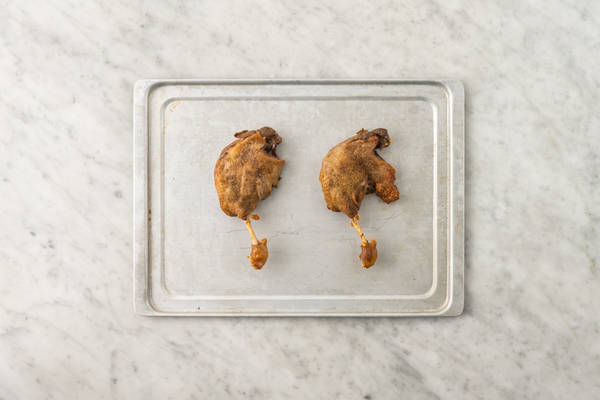
Remove the confit duck legs from their packaging and place on a baking tray, skin-side up. Scatter over half the Chinese Five Spice and rub all over the duck. When the oven is hot, roast the duck on the top shelf and the wedges on the middle shelf until the duck is piping hot and the wedges are golden, 25-35 mins. IMPORTANT: Ensure the duck is piping hot throughout. Turn the wedges halfway through.
Step 3 of 6
Plum Sauce Time
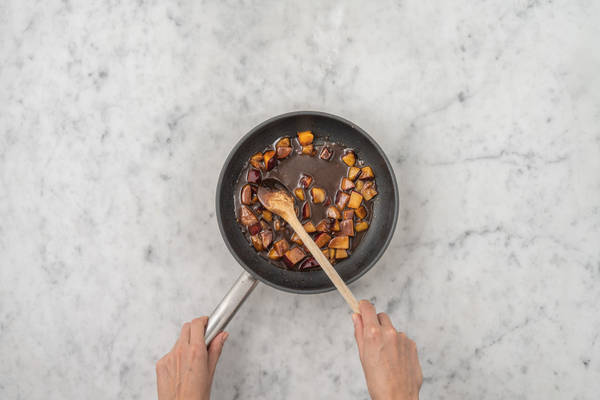
Meanwhile, halve the plums, remove the stones and chop the flesh into 1cm pieces. Heat a drizzle of oil in a medium frying pan on medium heat. Once hot, add the plums and remaining Chinese Five Spice and stir-fry until softened, 4-5 mins. Stir in the hoisin sauce, sugar and water for the sauce (see pantry for both amounts). Simmer, stirring regularly, until the plums have completely softened and the sauce has thickened, 10-12 mins. TIP: Taste and add more sugar if you'd prefer it a bit sweeter. Once cooked, transfer to a small bowl to cool.
Step 4 of 6
Prep the Veg
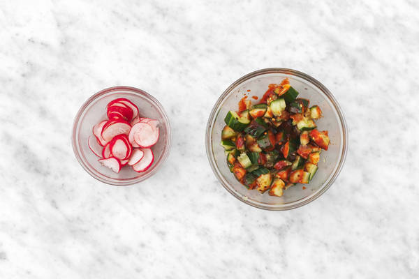
While the sauce simmers, trim and thinly slice the radishes. Pop the radishes into a small bowl and add the sugar (see pantry for amount) and half the rice vinegar. Add a pinch of salt, mix together and set aside. Trim the cucumber, then pop onto a board and use a rolling pin to gently smack it a few times until split. Cut the smacked cucumber into 1cm chunks and put it into a bowl.Pour over the remaining rice vinegar, sambal and soy sauce. Mix together and set your spicy smacked cucumber aside.
Step 5 of 6
It's a Wrap
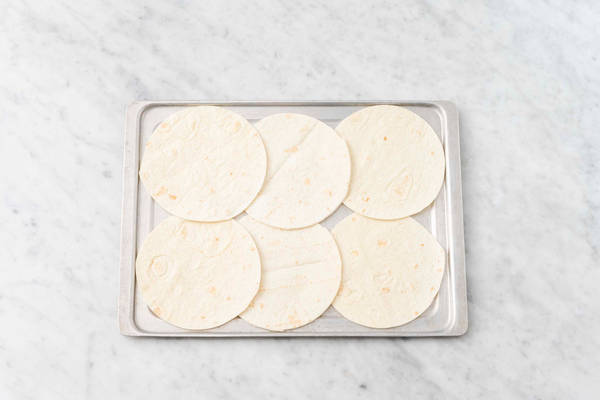
When everything's nearly ready, pop the tortillas (3 per person) onto a baking tray and into the oven to warm through, 1-2 mins. Once the duck is piping hot, remove it from the oven and use two forks to pull the meat off the bones. Shred finely, then discard the bones.
Step 6 of 6
Assemble and Serve
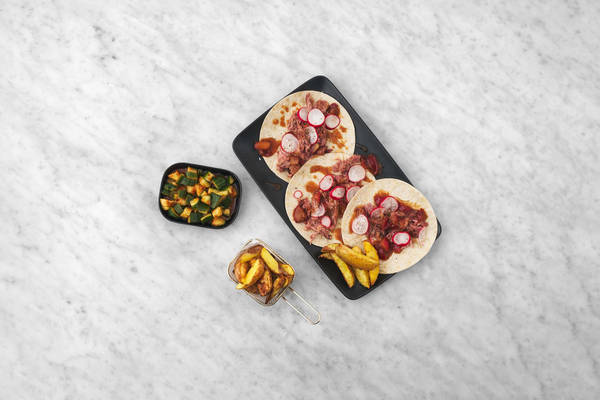
Share the tortillas between plates. Top with the shredded duck drizzle over the plum sauce and finish with a few pickled radishes on top. Serve the smacked cucumber salad and wedges alongisde. TIP: Tacos are best enjoyed eaten by hand - get stuck in! Enjoy!